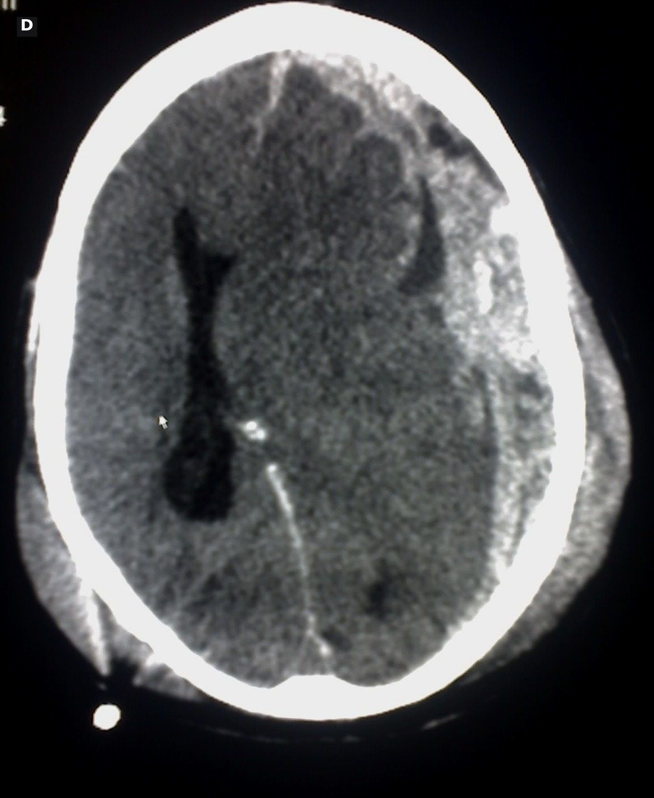
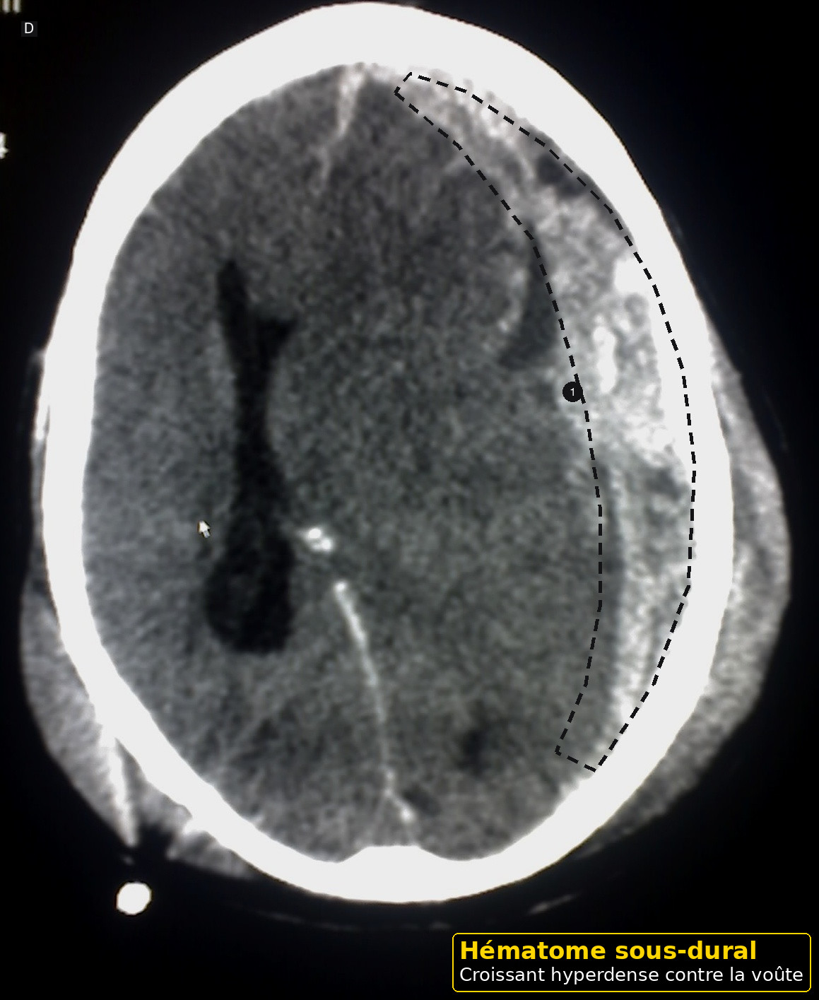

Maltraitance du nourrisson
Taille : mesurée par le script du dépôt.
L'essentiel
Maltraitance du nourrisson : les critères, les signes d'alarme et les doses lues sont dans les fenêtres.
1. Définition
Le détail est dans la fenêtre.
La maltraitance du nourrisson est une atteinte physique, une négligence, ou les deux, infligée ou permise.9
Le cri peut être le seul motif d'arrivée.9
Ne pas la voir est une faute médicale, au même titre que manquer une méningite, selon le texte suisse du 15 octobre 2021.9
Une ecchymose n'est pas un diagnostic, mais elle oblige à évaluer.9
Le secouement est un mécanisme grave, rappelé par la brochure genevoise.9
À l'arrivée, pour Maltraitance du nourrisson, on déshabille devant témoin.
À l'arrivée, pour Maltraitance du nourrisson, on propose un relais aux parents à bout.
À l'arrivée, pour Maltraitance du nourrisson, on ne confronte pas seul.
Après le déshabillage, pour Maltraitance du nourrisson, on vérifie la règle cantonale sur place.
Après le déshabillage, pour Maltraitance du nourrisson, on refuse le retour simple au motif pleurs.
Avant l'ordonnance, pour Maltraitance du nourrisson, on connaît le droit d'aviser de l'article 314c.
Avant l'ordonnance, pour Maltraitance du nourrisson, on garde l'enfant tant que la sécurité n'est pas organisée.
Si le cri persiste, pour Maltraitance du nourrisson, on note les mots exacts.
Si le cri persiste, pour Maltraitance du nourrisson, on antalgie une fracture selon l'autorisation.
Avant le retour à domicile, pour Maltraitance du nourrisson, on protège tout de suite si le danger est aigu.
Avant le retour à domicile, pour Maltraitance du nourrisson, on n'invente pas un mécanisme.
Quand la famille rappelle, pour Maltraitance du nourrisson, on ne dit pas que la règle prouve à elle seule.
Quand la famille rappelle, pour Maltraitance du nourrisson, on mesure le périmètre.
Dans le compte rendu, pour Maltraitance du nourrisson, on applique la règle seulement s'il y a une ecchymose.
Dans le compte rendu, pour Maltraitance du nourrisson, on ne retarde pas la protection pour une image.
Si un signe nouveau apparaît, pour Maltraitance du nourrisson, on déshabille devant témoin.
Si un signe nouveau apparaît, pour Maltraitance du nourrisson, on propose un relais aux parents à bout.
Si un signe nouveau apparaît, pour Maltraitance du nourrisson, on ne confronte pas seul.
À la visite de contrôle, pour Maltraitance du nourrisson, on vérifie la règle cantonale sur place.
À la visite de contrôle, pour Maltraitance du nourrisson, on refuse le retour simple au motif pleurs.
Devant les deux parents, pour Maltraitance du nourrisson, on connaît le droit d'aviser de l'article 314c.
Devant les deux parents, pour Maltraitance du nourrisson, on garde l'enfant tant que la sécurité n'est pas organisée.
Au moment de la pesée, pour Maltraitance du nourrisson, on note les mots exacts.
Au moment de la pesée, pour Maltraitance du nourrisson, on antalgie une fracture selon l'autorisation.
Après la prise de température, pour Maltraitance du nourrisson, on protège tout de suite si le danger est aigu.
Après la prise de température, pour Maltraitance du nourrisson, on n'invente pas un mécanisme.
À l'arrivée, pour Maltraitance du nourrisson, on ne dit pas que la règle prouve à elle seule, noté au passage 2.
2. Épidémiologie
Le détail est dans la fenêtre.
En 2020, 21 cliniques suisses ont enregistré 1590 cas, surtout des mauvais traitements physiques, 37 pour cent, et de la négligence, 27 pour cent.8
Ces chiffres ne sont pas la part des pleurs du cabinet.8
La règle de 2021 a été étudiée chez 2161 enfants de moins de 4 ans qui avaient une ecchymose.8
Dans cet échantillon d'urgences, 19 pour cent ont été classés maltraitance.8
La performance en cabinet de ville n'est pas celle de cette étude.8
À l'arrivée, pour Maltraitance du nourrisson, on dessine chaque ecchymose.
À l'arrivée, pour Maltraitance du nourrisson, on cherche le fond d'œil si le secouement est plausible.
À l'arrivée, pour Maltraitance du nourrisson, on transmet à l'équipe de protection.
Après le déshabillage, pour Maltraitance du nourrisson, on dit de ne jamais secouer, même sans suspicion.
Après le déshabillage, pour Maltraitance du nourrisson, on relit le texte du 15 octobre 2021.
Avant l'ordonnance, pour Maltraitance du nourrisson, on ne transforme pas l'article 314d en obligation du médecin au secret fédéral.
Avant l'ordonnance, pour Maltraitance du nourrisson, on documente l'heure d'arrivée.
Si le cri persiste, pour Maltraitance du nourrisson, on n'avertit pas l'auteur suspecté d'une plainte.
Si le cri persiste, pour Maltraitance du nourrisson, on n'oppose pas infection et coups.
Avant le retour à domicile, pour Maltraitance du nourrisson, on travaille à deux.
Avant le retour à domicile, pour Maltraitance du nourrisson, on sépare le vu, le dit et le conclu.
Quand la famille rappelle, pour Maltraitance du nourrisson, on cite 95,6 pour cent et 87,1 pour cent comme performances d'une étude d'urgences.
Quand la famille rappelle, pour Maltraitance du nourrisson, on regarde le frein et les oreilles.
Dans le compte rendu, pour Maltraitance du nourrisson, on prend au sérieux toute ecchymose avant 4,99 mois.
Dans le compte rendu, pour Maltraitance du nourrisson, on pèse.
Si un signe nouveau apparaît, pour Maltraitance du nourrisson, on dessine chaque ecchymose.
Si un signe nouveau apparaît, pour Maltraitance du nourrisson, on cherche le fond d'œil si le secouement est plausible.
Si un signe nouveau apparaît, pour Maltraitance du nourrisson, on transmet à l'équipe de protection.
À la visite de contrôle, pour Maltraitance du nourrisson, on dit de ne jamais secouer, même sans suspicion.
À la visite de contrôle, pour Maltraitance du nourrisson, on relit le texte du 15 octobre 2021.
Devant les deux parents, pour Maltraitance du nourrisson, on ne transforme pas l'article 314d en obligation du médecin au secret fédéral.
Devant les deux parents, pour Maltraitance du nourrisson, on documente l'heure d'arrivée.
Au moment de la pesée, pour Maltraitance du nourrisson, on n'avertit pas l'auteur suspecté d'une plainte.
Au moment de la pesée, pour Maltraitance du nourrisson, on n'oppose pas infection et coups.
Après la prise de température, pour Maltraitance du nourrisson, on travaille à deux.
Après la prise de température, pour Maltraitance du nourrisson, on sépare le vu, le dit et le conclu.
À l'arrivée, pour Maltraitance du nourrisson, on cite 95,6 pour cent et 87,1 pour cent comme performances d'une étude d'urgences, noté au passage 2.
3. Physiopathologie
Le détail est dans la fenêtre.
Le nourrisson ne se déplace pas seul. Une ecchymose a donc peu d'explication de jeu.9
Le secouement fait bouger le cerveau dans la boîte crânienne.9
La brochure genevoise décrit un mouvement violent de la tête, mortel ou gravement lésionnel.9
Les lésions d'âges différents suggèrent la répétition.9
Le mécanisme est plurifactoriel, mais un danger aigu se protège d'abord.9
À l'arrivée, pour Maltraitance du nourrisson, on applique la règle seulement s'il y a une ecchymose.
À l'arrivée, pour Maltraitance du nourrisson, on ne retarde pas la protection pour une image.
Après le déshabillage, pour Maltraitance du nourrisson, on déshabille devant témoin.
Après le déshabillage, pour Maltraitance du nourrisson, on propose un relais aux parents à bout.
Après le déshabillage, pour Maltraitance du nourrisson, on ne confronte pas seul.
Avant l'ordonnance, pour Maltraitance du nourrisson, on vérifie la règle cantonale sur place.
Avant l'ordonnance, pour Maltraitance du nourrisson, on refuse le retour simple au motif pleurs.
Si le cri persiste, pour Maltraitance du nourrisson, on connaît le droit d'aviser de l'article 314c.
Si le cri persiste, pour Maltraitance du nourrisson, on garde l'enfant tant que la sécurité n'est pas organisée.
Avant le retour à domicile, pour Maltraitance du nourrisson, on note les mots exacts.
Avant le retour à domicile, pour Maltraitance du nourrisson, on antalgie une fracture selon l'autorisation.
Quand la famille rappelle, pour Maltraitance du nourrisson, on protège tout de suite si le danger est aigu.
Quand la famille rappelle, pour Maltraitance du nourrisson, on n'invente pas un mécanisme.
Dans le compte rendu, pour Maltraitance du nourrisson, on ne dit pas que la règle prouve à elle seule.
Dans le compte rendu, pour Maltraitance du nourrisson, on mesure le périmètre.
Si un signe nouveau apparaît, pour Maltraitance du nourrisson, on applique la règle seulement s'il y a une ecchymose.
Si un signe nouveau apparaît, pour Maltraitance du nourrisson, on ne retarde pas la protection pour une image.
À la visite de contrôle, pour Maltraitance du nourrisson, on déshabille devant témoin.
À la visite de contrôle, pour Maltraitance du nourrisson, on propose un relais aux parents à bout.
À la visite de contrôle, pour Maltraitance du nourrisson, on ne confronte pas seul.
Devant les deux parents, pour Maltraitance du nourrisson, on vérifie la règle cantonale sur place.
Devant les deux parents, pour Maltraitance du nourrisson, on refuse le retour simple au motif pleurs.
Au moment de la pesée, pour Maltraitance du nourrisson, on connaît le droit d'aviser de l'article 314c.
Au moment de la pesée, pour Maltraitance du nourrisson, on garde l'enfant tant que la sécurité n'est pas organisée.
Après la prise de température, pour Maltraitance du nourrisson, on note les mots exacts.
Après la prise de température, pour Maltraitance du nourrisson, on antalgie une fracture selon l'autorisation.
À l'arrivée, pour Maltraitance du nourrisson, on protège tout de suite si le danger est aigu, noté au passage 2.
4. Démarche diagnostique
Le détail est dans la fenêtre.
On demande comment la lésion est arrivée, à qui, et si le récit change.9
On écoute le mot de l'enfant plus grand et on le note tout de suite, sans le reformuler.9
On examine avec un collègue. Le principe jamais seul est écrit en 2021.9
On ne prévient pas l'auteur suspecté si une plainte pénale est envisagée.9
S'il y a danger aigu, la protection immédiate passe avant le reste.9
À l'arrivée, pour Maltraitance du nourrisson, on prend au sérieux toute ecchymose avant 4,99 mois.
À l'arrivée, pour Maltraitance du nourrisson, on pèse.
Après le déshabillage, pour Maltraitance du nourrisson, on dessine chaque ecchymose.
Après le déshabillage, pour Maltraitance du nourrisson, on cherche le fond d'œil si le secouement est plausible.
Après le déshabillage, pour Maltraitance du nourrisson, on transmet à l'équipe de protection.
Avant l'ordonnance, pour Maltraitance du nourrisson, on dit de ne jamais secouer, même sans suspicion.
Avant l'ordonnance, pour Maltraitance du nourrisson, on relit le texte du 15 octobre 2021.
Si le cri persiste, pour Maltraitance du nourrisson, on ne transforme pas l'article 314d en obligation du médecin au secret fédéral.
Si le cri persiste, pour Maltraitance du nourrisson, on documente l'heure d'arrivée.
Avant le retour à domicile, pour Maltraitance du nourrisson, on n'avertit pas l'auteur suspecté d'une plainte.
Avant le retour à domicile, pour Maltraitance du nourrisson, on n'oppose pas infection et coups.
Quand la famille rappelle, pour Maltraitance du nourrisson, on travaille à deux.
Quand la famille rappelle, pour Maltraitance du nourrisson, on sépare le vu, le dit et le conclu.
Dans le compte rendu, pour Maltraitance du nourrisson, on cite 95,6 pour cent et 87,1 pour cent comme performances d'une étude d'urgences.
Dans le compte rendu, pour Maltraitance du nourrisson, on regarde le frein et les oreilles.
Si un signe nouveau apparaît, pour Maltraitance du nourrisson, on prend au sérieux toute ecchymose avant 4,99 mois.
Si un signe nouveau apparaît, pour Maltraitance du nourrisson, on pèse.
À la visite de contrôle, pour Maltraitance du nourrisson, on dessine chaque ecchymose.
À la visite de contrôle, pour Maltraitance du nourrisson, on cherche le fond d'œil si le secouement est plausible.
À la visite de contrôle, pour Maltraitance du nourrisson, on transmet à l'équipe de protection.
Devant les deux parents, pour Maltraitance du nourrisson, on dit de ne jamais secouer, même sans suspicion.
Devant les deux parents, pour Maltraitance du nourrisson, on relit le texte du 15 octobre 2021.
Au moment de la pesée, pour Maltraitance du nourrisson, on ne transforme pas l'article 314d en obligation du médecin au secret fédéral.
Au moment de la pesée, pour Maltraitance du nourrisson, on documente l'heure d'arrivée.
Après la prise de température, pour Maltraitance du nourrisson, on n'avertit pas l'auteur suspecté d'une plainte.
Après la prise de température, pour Maltraitance du nourrisson, on n'oppose pas infection et coups.
À l'arrivée, pour Maltraitance du nourrisson, on travaille à deux, noté au passage 2.
5. Anamnèse et drapeaux rouges
Le détail est dans la fenêtre.
Toute ecchymose chez un nourrisson de 4,99 mois ou moins entre dans la règle de 2021, quel que soit l'endroit.8
La règle ne concerne que les enfants de moins de 4 ans qui ont déjà une ecchymose.8
Tronc, oreille, cou, frein, angle de mâchoire, joues, paupières, conjonctives, et dessin d'objet sont les régions lues.8
Une sensibilité de 95,6 pour cent et une spécificité de 87,1 pour cent sont celles de cette étude, pas un certificat.8
Un retard de recours, un récit incompatible ou un frère blessé renforcent l'alerte.8
À l'arrivée, pour Maltraitance du nourrisson, on ne dit pas que la règle prouve à elle seule.
À l'arrivée, pour Maltraitance du nourrisson, on mesure le périmètre.
Après le déshabillage, pour Maltraitance du nourrisson, on applique la règle seulement s'il y a une ecchymose.
Après le déshabillage, pour Maltraitance du nourrisson, on ne retarde pas la protection pour une image.
Avant l'ordonnance, pour Maltraitance du nourrisson, on déshabille devant témoin.
Avant l'ordonnance, pour Maltraitance du nourrisson, on propose un relais aux parents à bout.
Avant l'ordonnance, pour Maltraitance du nourrisson, on ne confronte pas seul.
Si le cri persiste, pour Maltraitance du nourrisson, on vérifie la règle cantonale sur place.
Si le cri persiste, pour Maltraitance du nourrisson, on refuse le retour simple au motif pleurs.
Avant le retour à domicile, pour Maltraitance du nourrisson, on connaît le droit d'aviser de l'article 314c.
Avant le retour à domicile, pour Maltraitance du nourrisson, on garde l'enfant tant que la sécurité n'est pas organisée.
Quand la famille rappelle, pour Maltraitance du nourrisson, on note les mots exacts.
Quand la famille rappelle, pour Maltraitance du nourrisson, on antalgie une fracture selon l'autorisation.
Dans le compte rendu, pour Maltraitance du nourrisson, on protège tout de suite si le danger est aigu.
Dans le compte rendu, pour Maltraitance du nourrisson, on n'invente pas un mécanisme.
Si un signe nouveau apparaît, pour Maltraitance du nourrisson, on ne dit pas que la règle prouve à elle seule.
Si un signe nouveau apparaît, pour Maltraitance du nourrisson, on mesure le périmètre.
À la visite de contrôle, pour Maltraitance du nourrisson, on applique la règle seulement s'il y a une ecchymose.
À la visite de contrôle, pour Maltraitance du nourrisson, on ne retarde pas la protection pour une image.
Devant les deux parents, pour Maltraitance du nourrisson, on déshabille devant témoin.
Devant les deux parents, pour Maltraitance du nourrisson, on propose un relais aux parents à bout.
Devant les deux parents, pour Maltraitance du nourrisson, on ne confronte pas seul.
Au moment de la pesée, pour Maltraitance du nourrisson, on vérifie la règle cantonale sur place.
Au moment de la pesée, pour Maltraitance du nourrisson, on refuse le retour simple au motif pleurs.
Après la prise de température, pour Maltraitance du nourrisson, on connaît le droit d'aviser de l'article 314c.
Après la prise de température, pour Maltraitance du nourrisson, on garde l'enfant tant que la sécurité n'est pas organisée.
À l'arrivée, pour Maltraitance du nourrisson, on note les mots exacts, noté au passage 2.
6. Examen physique
Le détail est dans la fenêtre.
On déshabille, on mesure, on palpe la fontanelle, on regarde le fond d'œil si le secouement est possible et l'équipe prête.9
On dessine chaque ecchymose, sa taille, sa couleur et son siège.9
On cherche une fracture par la douleur à la mobilisation, sans forcer.9
On pèse, car la négligence cassure la courbe.9
On ne demande pas aux parents de faire avouer quoi que ce soit.9
À l'arrivée, pour Maltraitance du nourrisson, on cite 95,6 pour cent et 87,1 pour cent comme performances d'une étude d'urgences.
À l'arrivée, pour Maltraitance du nourrisson, on regarde le frein et les oreilles.
Après le déshabillage, pour Maltraitance du nourrisson, on prend au sérieux toute ecchymose avant 4,99 mois.
Après le déshabillage, pour Maltraitance du nourrisson, on pèse.
Avant l'ordonnance, pour Maltraitance du nourrisson, on dessine chaque ecchymose.
Avant l'ordonnance, pour Maltraitance du nourrisson, on cherche le fond d'œil si le secouement est plausible.
Avant l'ordonnance, pour Maltraitance du nourrisson, on transmet à l'équipe de protection.
Si le cri persiste, pour Maltraitance du nourrisson, on dit de ne jamais secouer, même sans suspicion.
Si le cri persiste, pour Maltraitance du nourrisson, on relit le texte du 15 octobre 2021.
Avant le retour à domicile, pour Maltraitance du nourrisson, on ne transforme pas l'article 314d en obligation du médecin au secret fédéral.
Avant le retour à domicile, pour Maltraitance du nourrisson, on documente l'heure d'arrivée.
Quand la famille rappelle, pour Maltraitance du nourrisson, on n'avertit pas l'auteur suspecté d'une plainte.
Quand la famille rappelle, pour Maltraitance du nourrisson, on n'oppose pas infection et coups.
Dans le compte rendu, pour Maltraitance du nourrisson, on travaille à deux.
Dans le compte rendu, pour Maltraitance du nourrisson, on sépare le vu, le dit et le conclu.
Si un signe nouveau apparaît, pour Maltraitance du nourrisson, on cite 95,6 pour cent et 87,1 pour cent comme performances d'une étude d'urgences.
Si un signe nouveau apparaît, pour Maltraitance du nourrisson, on regarde le frein et les oreilles.
À la visite de contrôle, pour Maltraitance du nourrisson, on prend au sérieux toute ecchymose avant 4,99 mois.
À la visite de contrôle, pour Maltraitance du nourrisson, on pèse.
Devant les deux parents, pour Maltraitance du nourrisson, on dessine chaque ecchymose.
Devant les deux parents, pour Maltraitance du nourrisson, on cherche le fond d'œil si le secouement est plausible.
Devant les deux parents, pour Maltraitance du nourrisson, on transmet à l'équipe de protection.
Au moment de la pesée, pour Maltraitance du nourrisson, on dit de ne jamais secouer, même sans suspicion.
Au moment de la pesée, pour Maltraitance du nourrisson, on relit le texte du 15 octobre 2021.
Après la prise de température, pour Maltraitance du nourrisson, on ne transforme pas l'article 314d en obligation du médecin au secret fédéral.
Après la prise de température, pour Maltraitance du nourrisson, on documente l'heure d'arrivée.
À l'arrivée, pour Maltraitance du nourrisson, on n'avertit pas l'auteur suspecté d'une plainte, noté au passage 2.
7. Approche syndromique
Le détail est dans la fenêtre.
Ecchymose plus cri plus récit flou : évaluation de protection, et recherche médicale des diagnostics rares qui marquent la peau.9
Secousse avouée ou suspectée : urgence neurochirurgicale et protection.9
Fracture du nourrisson non déambulant : on n'accepte pas une chute du canapé sans bilan.9
Négligence : enfant froid, sale, courbe plate, retard de soins.9
On n'oppose pas infection et maltraitance. Les deux peuvent être vraies.9
À l'arrivée, pour Maltraitance du nourrisson, on protège tout de suite si le danger est aigu.
À l'arrivée, pour Maltraitance du nourrisson, on n'invente pas un mécanisme.
Après le déshabillage, pour Maltraitance du nourrisson, on ne dit pas que la règle prouve à elle seule.
Après le déshabillage, pour Maltraitance du nourrisson, on mesure le périmètre.
Avant l'ordonnance, pour Maltraitance du nourrisson, on applique la règle seulement s'il y a une ecchymose.
Avant l'ordonnance, pour Maltraitance du nourrisson, on ne retarde pas la protection pour une image.
Si le cri persiste, pour Maltraitance du nourrisson, on déshabille devant témoin.
Si le cri persiste, pour Maltraitance du nourrisson, on propose un relais aux parents à bout.
Si le cri persiste, pour Maltraitance du nourrisson, on ne confronte pas seul.
Avant le retour à domicile, pour Maltraitance du nourrisson, on vérifie la règle cantonale sur place.
Avant le retour à domicile, pour Maltraitance du nourrisson, on refuse le retour simple au motif pleurs.
Quand la famille rappelle, pour Maltraitance du nourrisson, on connaît le droit d'aviser de l'article 314c.
Quand la famille rappelle, pour Maltraitance du nourrisson, on garde l'enfant tant que la sécurité n'est pas organisée.
Dans le compte rendu, pour Maltraitance du nourrisson, on note les mots exacts.
Dans le compte rendu, pour Maltraitance du nourrisson, on antalgie une fracture selon l'autorisation.
Si un signe nouveau apparaît, pour Maltraitance du nourrisson, on protège tout de suite si le danger est aigu.
Si un signe nouveau apparaît, pour Maltraitance du nourrisson, on n'invente pas un mécanisme.
À la visite de contrôle, pour Maltraitance du nourrisson, on ne dit pas que la règle prouve à elle seule.
À la visite de contrôle, pour Maltraitance du nourrisson, on mesure le périmètre.
Devant les deux parents, pour Maltraitance du nourrisson, on applique la règle seulement s'il y a une ecchymose.
Devant les deux parents, pour Maltraitance du nourrisson, on ne retarde pas la protection pour une image.
Au moment de la pesée, pour Maltraitance du nourrisson, on déshabille devant témoin.
Au moment de la pesée, pour Maltraitance du nourrisson, on propose un relais aux parents à bout.
Au moment de la pesée, pour Maltraitance du nourrisson, on ne confronte pas seul.
Après la prise de température, pour Maltraitance du nourrisson, on vérifie la règle cantonale sur place.
Après la prise de température, pour Maltraitance du nourrisson, on refuse le retour simple au motif pleurs.
À l'arrivée, pour Maltraitance du nourrisson, on connaît le droit d'aviser de l'article 314c, noté au passage 2.
8. Diagnostic positif
Le détail est dans la fenêtre.
Une composante positive de la règle indique un risque et une évaluation. Elle n'est pas le diagnostic final.8
Le diagnostic de maltraitance se construit avec l'équipe, les images et parfois l'autorité.8
On distingue ce qui est vu, ce qui est dit, et ce qui est conclu.8
On date chaque étape.8
On ne écrit pas un mécanisme que personne n'a observé.8
À l'arrivée, pour Maltraitance du nourrisson, on travaille à deux.
À l'arrivée, pour Maltraitance du nourrisson, on sépare le vu, le dit et le conclu.
Après le déshabillage, pour Maltraitance du nourrisson, on cite 95,6 pour cent et 87,1 pour cent comme performances d'une étude d'urgences.
Après le déshabillage, pour Maltraitance du nourrisson, on regarde le frein et les oreilles.
Avant l'ordonnance, pour Maltraitance du nourrisson, on prend au sérieux toute ecchymose avant 4,99 mois.
Avant l'ordonnance, pour Maltraitance du nourrisson, on pèse.
Si le cri persiste, pour Maltraitance du nourrisson, on dessine chaque ecchymose.
Si le cri persiste, pour Maltraitance du nourrisson, on cherche le fond d'œil si le secouement est plausible.
Si le cri persiste, pour Maltraitance du nourrisson, on transmet à l'équipe de protection.
Avant le retour à domicile, pour Maltraitance du nourrisson, on dit de ne jamais secouer, même sans suspicion.
Avant le retour à domicile, pour Maltraitance du nourrisson, on relit le texte du 15 octobre 2021.
Quand la famille rappelle, pour Maltraitance du nourrisson, on ne transforme pas l'article 314d en obligation du médecin au secret fédéral.
Quand la famille rappelle, pour Maltraitance du nourrisson, on documente l'heure d'arrivée.
Dans le compte rendu, pour Maltraitance du nourrisson, on n'avertit pas l'auteur suspecté d'une plainte.
Dans le compte rendu, pour Maltraitance du nourrisson, on n'oppose pas infection et coups.
Si un signe nouveau apparaît, pour Maltraitance du nourrisson, on travaille à deux.
Si un signe nouveau apparaît, pour Maltraitance du nourrisson, on sépare le vu, le dit et le conclu.
À la visite de contrôle, pour Maltraitance du nourrisson, on cite 95,6 pour cent et 87,1 pour cent comme performances d'une étude d'urgences.
À la visite de contrôle, pour Maltraitance du nourrisson, on regarde le frein et les oreilles.
Devant les deux parents, pour Maltraitance du nourrisson, on prend au sérieux toute ecchymose avant 4,99 mois.
Devant les deux parents, pour Maltraitance du nourrisson, on pèse.
Au moment de la pesée, pour Maltraitance du nourrisson, on dessine chaque ecchymose.
Au moment de la pesée, pour Maltraitance du nourrisson, on cherche le fond d'œil si le secouement est plausible.
Au moment de la pesée, pour Maltraitance du nourrisson, on transmet à l'équipe de protection.
Après la prise de température, pour Maltraitance du nourrisson, on dit de ne jamais secouer, même sans suspicion.
Après la prise de température, pour Maltraitance du nourrisson, on relit le texte du 15 octobre 2021.
À l'arrivée, pour Maltraitance du nourrisson, on ne transforme pas l'article 314d en obligation du médecin au secret fédéral, noté au passage 2.
9. Examens complémentaires
Le détail est dans la fenêtre.
Selon le tableau : fond d'œil, imagerie osseuse, ou résonance de la tête.9


Reconnaître. Hématome sous-dural : collection hyperdense en croissant entre le cerveau et la voûte, côté gauche du patient (à droite de l'image). Emplacement repris des flèches de l'auteur (version annotée du même fichier).
Scanner cérébral sans injection : hématome sous-dural traumatique. Cliché non pédiatrique ; le curseur de souris visible vient du fichier source.
Pièges. Le croissant épouse la voûte et franchit les sutures, contrairement à l'hématome extradural biconvexe. Chez le nourrisson, un hématome sous-dural sans traumatisme expliqué fait chercher une lésion infligée (fond d'œil, squelette).
Image : Glitzy queen00 (en.wikipedia) — domaine public — Wikimedia Commons, consulté le 2026-11-01. Version annotée (pointillés, numéros, cartouche) ajoutée. Cliché d'adulte, en attendant un cliché pédiatrique sous licence libre.

Le choix de l'image appartient à l'équipe pédiatrique entraînée, pas à un protocole inventé ici.9
Une coagulation se discute devant des bleus, sans retarder la protection.9
On ne fait pas un fond d'œil à la place de la mise en sécurité.9
On consigne qui a vu l'enfant.9
À l'arrivée, pour Maltraitance du nourrisson, on note les mots exacts.
À l'arrivée, pour Maltraitance du nourrisson, on antalgie une fracture selon l'autorisation.
Après le déshabillage, pour Maltraitance du nourrisson, on protège tout de suite si le danger est aigu.
Après le déshabillage, pour Maltraitance du nourrisson, on n'invente pas un mécanisme.
Avant l'ordonnance, pour Maltraitance du nourrisson, on ne dit pas que la règle prouve à elle seule.
Avant l'ordonnance, pour Maltraitance du nourrisson, on mesure le périmètre.
Si le cri persiste, pour Maltraitance du nourrisson, on applique la règle seulement s'il y a une ecchymose.
Si le cri persiste, pour Maltraitance du nourrisson, on ne retarde pas la protection pour une image.
Avant le retour à domicile, pour Maltraitance du nourrisson, on déshabille devant témoin.
Avant le retour à domicile, pour Maltraitance du nourrisson, on propose un relais aux parents à bout.
Avant le retour à domicile, pour Maltraitance du nourrisson, on ne confronte pas seul.
Quand la famille rappelle, pour Maltraitance du nourrisson, on vérifie la règle cantonale sur place.
Quand la famille rappelle, pour Maltraitance du nourrisson, on refuse le retour simple au motif pleurs.
Dans le compte rendu, pour Maltraitance du nourrisson, on connaît le droit d'aviser de l'article 314c.
Dans le compte rendu, pour Maltraitance du nourrisson, on garde l'enfant tant que la sécurité n'est pas organisée.
Si un signe nouveau apparaît, pour Maltraitance du nourrisson, on note les mots exacts.
Si un signe nouveau apparaît, pour Maltraitance du nourrisson, on antalgie une fracture selon l'autorisation.
À la visite de contrôle, pour Maltraitance du nourrisson, on protège tout de suite si le danger est aigu.
À la visite de contrôle, pour Maltraitance du nourrisson, on n'invente pas un mécanisme.
Devant les deux parents, pour Maltraitance du nourrisson, on ne dit pas que la règle prouve à elle seule.
Devant les deux parents, pour Maltraitance du nourrisson, on mesure le périmètre.
Au moment de la pesée, pour Maltraitance du nourrisson, on applique la règle seulement s'il y a une ecchymose.
Au moment de la pesée, pour Maltraitance du nourrisson, on ne retarde pas la protection pour une image.
Après la prise de température, pour Maltraitance du nourrisson, on déshabille devant témoin.
Après la prise de température, pour Maltraitance du nourrisson, on propose un relais aux parents à bout.
Après la prise de température, pour Maltraitance du nourrisson, on ne confronte pas seul.
À l'arrivée, pour Maltraitance du nourrisson, on vérifie la règle cantonale sur place, noté au passage 2.
10. Arbre décisionnel
Le détail est dans la fenêtre.
Schéma interactif
Le schéma a trois questions : danger immédiat, ecchymose selon la règle, récit compatible.8
Danger immédiat : garder l'enfant et appeler.8
Ecchymose positive : évaluation supplémentaire.8
Récit incompatible : ne pas clore.8
Les trois peuvent être vraies ensemble.8
À l'arrivée, pour Maltraitance du nourrisson, on n'avertit pas l'auteur suspecté d'une plainte.
À l'arrivée, pour Maltraitance du nourrisson, on n'oppose pas infection et coups.
Après le déshabillage, pour Maltraitance du nourrisson, on travaille à deux.
Après le déshabillage, pour Maltraitance du nourrisson, on sépare le vu, le dit et le conclu.
Avant l'ordonnance, pour Maltraitance du nourrisson, on cite 95,6 pour cent et 87,1 pour cent comme performances d'une étude d'urgences.
Avant l'ordonnance, pour Maltraitance du nourrisson, on regarde le frein et les oreilles.
Si le cri persiste, pour Maltraitance du nourrisson, on prend au sérieux toute ecchymose avant 4,99 mois.
Si le cri persiste, pour Maltraitance du nourrisson, on pèse.
Avant le retour à domicile, pour Maltraitance du nourrisson, on dessine chaque ecchymose.
Avant le retour à domicile, pour Maltraitance du nourrisson, on cherche le fond d'œil si le secouement est plausible.
Avant le retour à domicile, pour Maltraitance du nourrisson, on transmet à l'équipe de protection.
Quand la famille rappelle, pour Maltraitance du nourrisson, on dit de ne jamais secouer, même sans suspicion.
Quand la famille rappelle, pour Maltraitance du nourrisson, on relit le texte du 15 octobre 2021.
Dans le compte rendu, pour Maltraitance du nourrisson, on ne transforme pas l'article 314d en obligation du médecin au secret fédéral.
Dans le compte rendu, pour Maltraitance du nourrisson, on documente l'heure d'arrivée.
Si un signe nouveau apparaît, pour Maltraitance du nourrisson, on n'avertit pas l'auteur suspecté d'une plainte.
Si un signe nouveau apparaît, pour Maltraitance du nourrisson, on n'oppose pas infection et coups.
À la visite de contrôle, pour Maltraitance du nourrisson, on travaille à deux.
À la visite de contrôle, pour Maltraitance du nourrisson, on sépare le vu, le dit et le conclu.
Devant les deux parents, pour Maltraitance du nourrisson, on cite 95,6 pour cent et 87,1 pour cent comme performances d'une étude d'urgences.
Devant les deux parents, pour Maltraitance du nourrisson, on regarde le frein et les oreilles.
Au moment de la pesée, pour Maltraitance du nourrisson, on prend au sérieux toute ecchymose avant 4,99 mois.
Au moment de la pesée, pour Maltraitance du nourrisson, on pèse.
Après la prise de température, pour Maltraitance du nourrisson, on dessine chaque ecchymose.
Après la prise de température, pour Maltraitance du nourrisson, on cherche le fond d'œil si le secouement est plausible.
Après la prise de température, pour Maltraitance du nourrisson, on transmet à l'équipe de protection.
À l'arrivée, pour Maltraitance du nourrisson, on dit de ne jamais secouer, même sans suspicion, noté au passage 2.
11. Prise en charge
Le détail est dans la fenêtre.
La prise en charge est la sécurité, les soins des lésions, et le signalement adapté au droit.10
L'article 314c donne le droit d'aviser, y compris au médecin tenu au secret, si l'intérêt de l'enfant le justifie.10
L'article 314d n'oblige pas, au niveau fédéral, le médecin déjà tenu au secret de l'article 321.10
Un canton peut ajouter une obligation. On vérifie la règle locale sans l'inventer.10
L'antalgie d'une fracture suit l'information professionnelle. Dafalgan enfant, autorisation 43838, à 15 mg par kilogramme, ne remplace pas l'immobilisation.10
À l'arrivée, pour Maltraitance du nourrisson, on connaît le droit d'aviser de l'article 314c.
À l'arrivée, pour Maltraitance du nourrisson, on garde l'enfant tant que la sécurité n'est pas organisée.
Après le déshabillage, pour Maltraitance du nourrisson, on note les mots exacts.
Après le déshabillage, pour Maltraitance du nourrisson, on antalgie une fracture selon l'autorisation.
Avant l'ordonnance, pour Maltraitance du nourrisson, on protège tout de suite si le danger est aigu.
Avant l'ordonnance, pour Maltraitance du nourrisson, on n'invente pas un mécanisme.
Si le cri persiste, pour Maltraitance du nourrisson, on ne dit pas que la règle prouve à elle seule.
Si le cri persiste, pour Maltraitance du nourrisson, on mesure le périmètre.
Avant le retour à domicile, pour Maltraitance du nourrisson, on applique la règle seulement s'il y a une ecchymose.
Avant le retour à domicile, pour Maltraitance du nourrisson, on ne retarde pas la protection pour une image.
Quand la famille rappelle, pour Maltraitance du nourrisson, on déshabille devant témoin.
Quand la famille rappelle, pour Maltraitance du nourrisson, on propose un relais aux parents à bout.
Quand la famille rappelle, pour Maltraitance du nourrisson, on ne confronte pas seul.
Dans le compte rendu, pour Maltraitance du nourrisson, on vérifie la règle cantonale sur place.
Dans le compte rendu, pour Maltraitance du nourrisson, on refuse le retour simple au motif pleurs.
Si un signe nouveau apparaît, pour Maltraitance du nourrisson, on connaît le droit d'aviser de l'article 314c.
Si un signe nouveau apparaît, pour Maltraitance du nourrisson, on garde l'enfant tant que la sécurité n'est pas organisée.
À la visite de contrôle, pour Maltraitance du nourrisson, on note les mots exacts.
À la visite de contrôle, pour Maltraitance du nourrisson, on antalgie une fracture selon l'autorisation.
Devant les deux parents, pour Maltraitance du nourrisson, on protège tout de suite si le danger est aigu.
Devant les deux parents, pour Maltraitance du nourrisson, on n'invente pas un mécanisme.
Au moment de la pesée, pour Maltraitance du nourrisson, on ne dit pas que la règle prouve à elle seule.
Au moment de la pesée, pour Maltraitance du nourrisson, on mesure le périmètre.
Après la prise de température, pour Maltraitance du nourrisson, on applique la règle seulement s'il y a une ecchymose.
Après la prise de température, pour Maltraitance du nourrisson, on ne retarde pas la protection pour une image.
À l'arrivée, pour Maltraitance du nourrisson, on déshabille devant témoin, noté au passage 2.
À l'arrivée, pour Maltraitance du nourrisson, on propose un relais aux parents à bout, noté au passage 2.
12. Prévention
Le détail est dans la fenêtre.
On dit à chaque famille de ne jamais secouer, y compris quand le diagnostic n'est pas la maltraitance.3
On propose un relais si les parents sont à bout.3
On ne laisse pas un enfant en danger retourner au motif des pleurs du soir.3
On documente le conseil.3
La prévention ne se substitue pas au signalement quand les indices sont là.3
À l'arrivée, pour Maltraitance du nourrisson, on ne transforme pas l'article 314d en obligation du médecin au secret fédéral.
À l'arrivée, pour Maltraitance du nourrisson, on documente l'heure d'arrivée.
Après le déshabillage, pour Maltraitance du nourrisson, on n'avertit pas l'auteur suspecté d'une plainte.
Après le déshabillage, pour Maltraitance du nourrisson, on n'oppose pas infection et coups.
Avant l'ordonnance, pour Maltraitance du nourrisson, on travaille à deux.
Avant l'ordonnance, pour Maltraitance du nourrisson, on sépare le vu, le dit et le conclu.
Si le cri persiste, pour Maltraitance du nourrisson, on cite 95,6 pour cent et 87,1 pour cent comme performances d'une étude d'urgences.
Si le cri persiste, pour Maltraitance du nourrisson, on regarde le frein et les oreilles.
Avant le retour à domicile, pour Maltraitance du nourrisson, on prend au sérieux toute ecchymose avant 4,99 mois.
Avant le retour à domicile, pour Maltraitance du nourrisson, on pèse.
Quand la famille rappelle, pour Maltraitance du nourrisson, on dessine chaque ecchymose.
Quand la famille rappelle, pour Maltraitance du nourrisson, on cherche le fond d'œil si le secouement est plausible.
Quand la famille rappelle, pour Maltraitance du nourrisson, on transmet à l'équipe de protection.
Dans le compte rendu, pour Maltraitance du nourrisson, on dit de ne jamais secouer, même sans suspicion.
Dans le compte rendu, pour Maltraitance du nourrisson, on relit le texte du 15 octobre 2021.
Si un signe nouveau apparaît, pour Maltraitance du nourrisson, on ne transforme pas l'article 314d en obligation du médecin au secret fédéral.
Si un signe nouveau apparaît, pour Maltraitance du nourrisson, on documente l'heure d'arrivée.
À la visite de contrôle, pour Maltraitance du nourrisson, on n'avertit pas l'auteur suspecté d'une plainte.
À la visite de contrôle, pour Maltraitance du nourrisson, on n'oppose pas infection et coups.
Devant les deux parents, pour Maltraitance du nourrisson, on travaille à deux.
Devant les deux parents, pour Maltraitance du nourrisson, on sépare le vu, le dit et le conclu.
Au moment de la pesée, pour Maltraitance du nourrisson, on cite 95,6 pour cent et 87,1 pour cent comme performances d'une étude d'urgences.
Au moment de la pesée, pour Maltraitance du nourrisson, on regarde le frein et les oreilles.
Après la prise de température, pour Maltraitance du nourrisson, on prend au sérieux toute ecchymose avant 4,99 mois.
Après la prise de température, pour Maltraitance du nourrisson, on pèse.
À l'arrivée, pour Maltraitance du nourrisson, on dessine chaque ecchymose, noté au passage 2.
À l'arrivée, pour Maltraitance du nourrisson, on cherche le fond d'œil si le secouement est plausible, noté au passage 2.
13. Points clés
Le détail est dans la fenêtre.
Toute ecchymose avant 4,99 mois se prend au sérieux.8
La règle n'existe pas sans ecchymose.8
Sensibilité 95,6 pour cent et spécificité 87,1 pour cent dans l'étude de 2021, pas au cabinet.8
Droit d'aviser, article 314c, depuis 2019.8
Protection immédiate si le danger est aigu.8
À l'arrivée, pour Maltraitance du nourrisson, on vérifie la règle cantonale sur place.
À l'arrivée, pour Maltraitance du nourrisson, on refuse le retour simple au motif pleurs.
Après le déshabillage, pour Maltraitance du nourrisson, on connaît le droit d'aviser de l'article 314c.
Après le déshabillage, pour Maltraitance du nourrisson, on garde l'enfant tant que la sécurité n'est pas organisée.
Avant l'ordonnance, pour Maltraitance du nourrisson, on note les mots exacts.
Avant l'ordonnance, pour Maltraitance du nourrisson, on antalgie une fracture selon l'autorisation.
Si le cri persiste, pour Maltraitance du nourrisson, on protège tout de suite si le danger est aigu.
Si le cri persiste, pour Maltraitance du nourrisson, on n'invente pas un mécanisme.
Avant le retour à domicile, pour Maltraitance du nourrisson, on ne dit pas que la règle prouve à elle seule.
Avant le retour à domicile, pour Maltraitance du nourrisson, on mesure le périmètre.
Quand la famille rappelle, pour Maltraitance du nourrisson, on applique la règle seulement s'il y a une ecchymose.
Quand la famille rappelle, pour Maltraitance du nourrisson, on ne retarde pas la protection pour une image.
Dans le compte rendu, pour Maltraitance du nourrisson, on déshabille devant témoin.
Dans le compte rendu, pour Maltraitance du nourrisson, on propose un relais aux parents à bout.
Dans le compte rendu, pour Maltraitance du nourrisson, on ne confronte pas seul.
Si un signe nouveau apparaît, pour Maltraitance du nourrisson, on vérifie la règle cantonale sur place.
Si un signe nouveau apparaît, pour Maltraitance du nourrisson, on refuse le retour simple au motif pleurs.
À la visite de contrôle, pour Maltraitance du nourrisson, on connaît le droit d'aviser de l'article 314c.
À la visite de contrôle, pour Maltraitance du nourrisson, on garde l'enfant tant que la sécurité n'est pas organisée.
Devant les deux parents, pour Maltraitance du nourrisson, on note les mots exacts.
Devant les deux parents, pour Maltraitance du nourrisson, on antalgie une fracture selon l'autorisation.
Au moment de la pesée, pour Maltraitance du nourrisson, on protège tout de suite si le danger est aigu.
Au moment de la pesée, pour Maltraitance du nourrisson, on n'invente pas un mécanisme.
Après la prise de température, pour Maltraitance du nourrisson, on ne dit pas que la règle prouve à elle seule.
Après la prise de température, pour Maltraitance du nourrisson, on mesure le périmètre.
À l'arrivée, pour Maltraitance du nourrisson, on applique la règle seulement s'il y a une ecchymose, noté au passage 2.
À l'arrivée, pour Maltraitance du nourrisson, on ne retarde pas la protection pour une image, noté au passage 2.
14. Pièges et cas
Le détail est dans la fenêtre.
Piège : croire qu'un nourrisson se fait des bleus en rampant alors qu'il ne rampe pas.10
Piège : confronter seul un parent suspect.10
Piège : écrire que la règle prouve la maltraitance.10
Cas corrigé. À 3 mois, cri et une ecchymose de l'oreille. On déshabille, on dessine, on garde l'enfant, on appelle l'équipe.10
On n'explique pas l'oreille par une colique.10
L'avis à l'autorité suit l'article 314c et la règle cantonale vérifiée sur place.10
À l'arrivée, pour Maltraitance du nourrisson, on dit de ne jamais secouer, même sans suspicion.
À l'arrivée, pour Maltraitance du nourrisson, on relit le texte du 15 octobre 2021.
Après le déshabillage, pour Maltraitance du nourrisson, on ne transforme pas l'article 314d en obligation du médecin au secret fédéral.
Après le déshabillage, pour Maltraitance du nourrisson, on documente l'heure d'arrivée.
Avant l'ordonnance, pour Maltraitance du nourrisson, on n'avertit pas l'auteur suspecté d'une plainte.
Avant l'ordonnance, pour Maltraitance du nourrisson, on n'oppose pas infection et coups.
Si le cri persiste, pour Maltraitance du nourrisson, on travaille à deux.
Si le cri persiste, pour Maltraitance du nourrisson, on sépare le vu, le dit et le conclu.
Avant le retour à domicile, pour Maltraitance du nourrisson, on cite 95,6 pour cent et 87,1 pour cent comme performances d'une étude d'urgences.
Avant le retour à domicile, pour Maltraitance du nourrisson, on regarde le frein et les oreilles.
Quand la famille rappelle, pour Maltraitance du nourrisson, on prend au sérieux toute ecchymose avant 4,99 mois.
Quand la famille rappelle, pour Maltraitance du nourrisson, on pèse.
Dans le compte rendu, pour Maltraitance du nourrisson, on dessine chaque ecchymose.
Dans le compte rendu, pour Maltraitance du nourrisson, on cherche le fond d'œil si le secouement est plausible.
Dans le compte rendu, pour Maltraitance du nourrisson, on transmet à l'équipe de protection.
Si un signe nouveau apparaît, pour Maltraitance du nourrisson, on dit de ne jamais secouer, même sans suspicion.
Si un signe nouveau apparaît, pour Maltraitance du nourrisson, on relit le texte du 15 octobre 2021.
À la visite de contrôle, pour Maltraitance du nourrisson, on ne transforme pas l'article 314d en obligation du médecin au secret fédéral.
À la visite de contrôle, pour Maltraitance du nourrisson, on documente l'heure d'arrivée.
Devant les deux parents, pour Maltraitance du nourrisson, on n'avertit pas l'auteur suspecté d'une plainte.
Devant les deux parents, pour Maltraitance du nourrisson, on n'oppose pas infection et coups.
Au moment de la pesée, pour Maltraitance du nourrisson, on travaille à deux.
Au moment de la pesée, pour Maltraitance du nourrisson, on sépare le vu, le dit et le conclu.
Après la prise de température, pour Maltraitance du nourrisson, on cite 95,6 pour cent et 87,1 pour cent comme performances d'une étude d'urgences.
Après la prise de température, pour Maltraitance du nourrisson, on regarde le frein et les oreilles.
À l'arrivée, pour Maltraitance du nourrisson, on prend au sérieux toute ecchymose avant 4,99 mois, noté au passage 2.
Sources
Les preuves datées sont dans la fenêtre et dans le dossier evidence.
1. Benninga et collaborateurs. Troubles fonctionnels du nourrisson. Gastroenterology, 2016. Critères cliniques des coliques.
2. Zeevenhooven J et collaborateurs. Critères de Rome IV du nourrisson. Pediatric Gastroenterology, Hepatology and Nutrition, 2017.
3. Hôpitaux universitaires de Genève. Brochure La santé de votre enfant, chapitre des pleurs, page lue le 1 novembre 2026.
4. Groupe francophone d'hépatologie-gastroentérologie et nutrition pédiatriques. Fiche coliques, document de septembre 2018, relu le 1 novembre 2026.
5. Rosen R et collaborateurs. Reflux gastro-œsophagien de l'enfant. Journal of Pediatric Gastroenterology and Nutrition, 2018.
6. Vandenplas Y et collaborateurs. Allergie aux protéines du lait de vache. Journal of Pediatric Gastroenterology and Nutrition, 2024.
7. Groupe britannique de radiologie pédiatrique. Guide de l'invagination, document du 18 août 2017, relu le 1 novembre 2026.
8. Pierce et collaborateurs. Règle des ecchymoses. Revue médicale en accès libre, 2021.
9. Lips U, Wopmann M. Maltraitance infantile. pédiatrie suisse, 15 octobre 2021.
10. Code civil suisse, articles 314c et 314d, en vigueur le 1er janvier 2019.
11. Information professionnelle, Dafalgan enfant sirop, autorisation 43838, corpus du 8 octobre 2026.
12. Information professionnelle, Algifor Dolo Junior, autorisation 58834, corpus du 8 octobre 2026.
13. Information professionnelle, Nexium granulés, autorisation 58091, corpus du 8 octobre 2026.
14. Société suisse de néonatologie. Hypoglycémie dès 35 semaines en maternité, texte 2020 publié le 6 avril 2021.
15. Société européenne du glaucome. Glaucome congénital, 4e édition, British Journal of Ophthalmology, 2017, et 5e édition, juillet 2021.
16. Information professionnelle, Rocephin, autorisation 44625, corpus du 8 octobre 2026.
AIPS désigne l'information professionnelle Swissmedic citée par son numéro.
Contenu établi à partir des sources citées ; non validé cliniquement par un médecin.